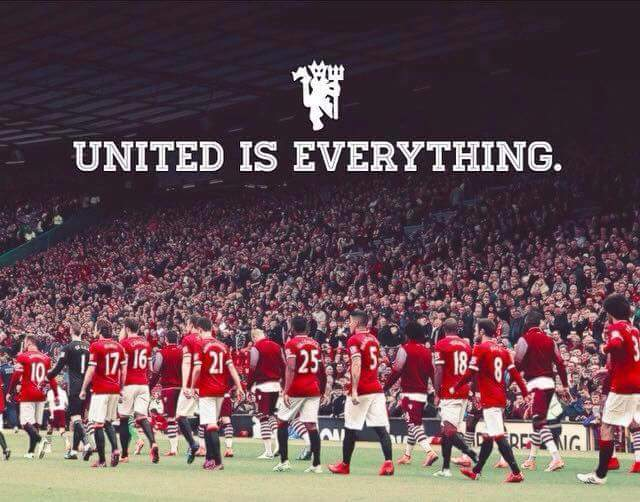

My name is Siddhanth Naik. I am from Karnataka, India.
I came to Chicago as a International student this fall 2017.
I will be pursuing my masters in data management.
I have completed my bachelors degree in mechanical engineering.
I have worked as a intern in Precision Expansion Bellows Industries.
As i stayed in a costal area in India, i love costal food the most.

I love watching cricket
My favorite cricket team is Team India
I aslo love watching football the most and my favorite football club is Manchester United.
